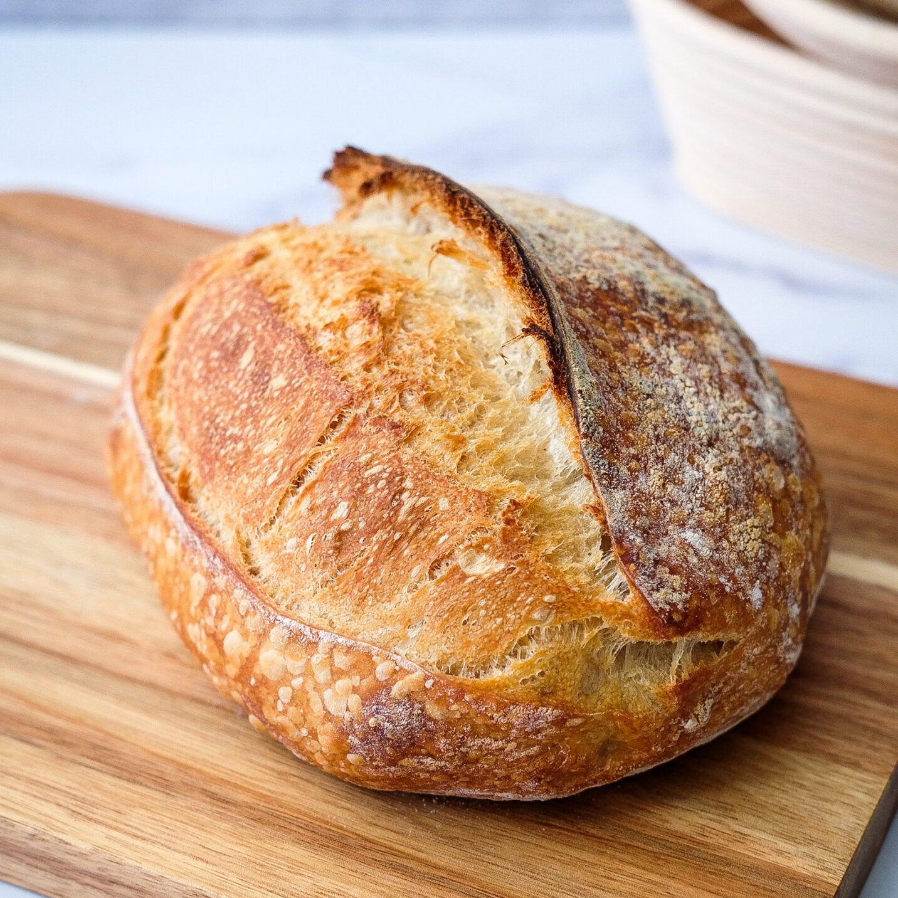

Pão Italiano
Pão italiano de fermentação natural de 3 dias! Não há quem resista.

Pão Francês
Nosso tradicional pão Francês, um classico adorado pelos brasileiros. Feito pelas melhores mãos, com os melhores ingredientes.

Pão de Queijo
Mais brasileiro impossível! Clássico pão de queijo, com receita vinda diretamente de Minas Gerais.